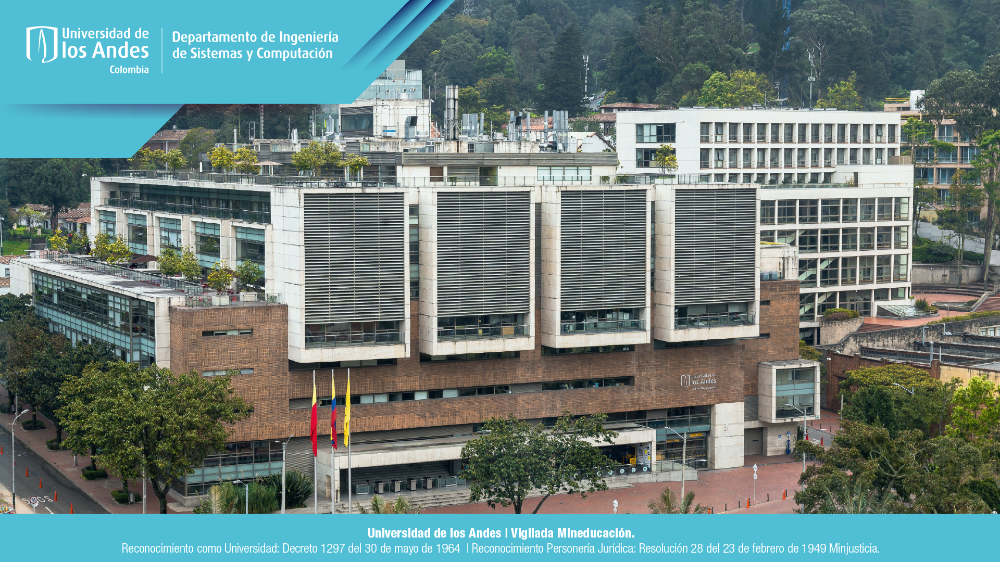

Soy estudiante de 19 años actualmente cursando tercer semestre de Ingeniería de Sistemas. Tengo un gran interés por el desarrollo de software y me motiva la creación a soluciones de problemas complejos a través de la computación. Estoy en constante aprendizaje para perfeccionar mis habilidades y contribuir con mi conocimiento a proyectos tecnológicos desafiantes, por lo que busco oportunidades para empezar a trabajar y poder ampliar mis conocimientos dentro del entorno laboral.
Bachiller en Gimnasio La Montaña
| Idiomas de programacion | Java | Python |
|---|---|---|
| Habilidades | Trabajo en grupo, responsabilidad, liderazgo |